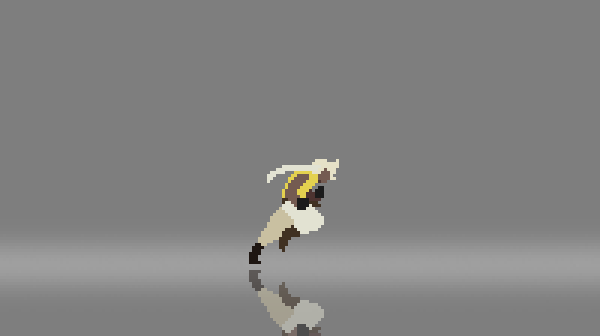

Sobre o Curso
Diferente de outros cursos e graduações de programação de jogos, Jogos Digitais não só te ensina a programar um jogo, mas sim sobre todo o processo do desenvolvimento de um jogo, desde o conceito de arte, personagens e cenário, até a criação de músicas próprias, efeitos sonoros, design de mapas, pixel-art, desenhos 2D, modelos 3D, inteligência artificial e muitas outras etapas para se desenvolver um jogo.
Grade-Currícular
- Animação para Jogos I;
- Animação para Jogos II;
- Animação para Jogos III;
- Atividades Complementares;
- Banco de Dados para Jogos Digitais;
- Comunicação Aplicada;
- Criação e Desenvolvimento de Personagens;
- Desenvolvimento Sustentável;
- Design de Jogos Digitais I;
- Design de Jogos Digitais II;
- Design de Jogos Digitais III;
- Direitos Humanos (optativa);
- Economia e Mercado;
- Educação Ambiental (optativa);
- Empreendedorismo;
- Estatística;
- Estudos Disciplinares;
- Fundamentos de Sistemas Operacionais;
- Física Aplicada a Jogos Digitais;
- Gestão da Qualidade;
- Gestão Estratégica de Recursos Humanos;
- Hipermídia e Narratividade em Jogos;
- Laboratório de Produção de Games I;
- Laboratório de Produção de Games II;
- Língua Brasileira de Sinais (optativa);
- Lógica;
- Metodologia Científica;
- Organização de Computadores;
- Princípios de Sistemas de Informação;
- Projeto Integrado Multidisciplinar;
- Relações Étnico-raciais e Afrodescendência (optativa);
- Roteirização para Jogos Digitais;
- Tecnologias de Redes de Computadores;
- Tópicos Especiais em Jogos Digitais;
- Ética e Legislação Profissional;
